ЧТО ТАКОЕ ЦОД?
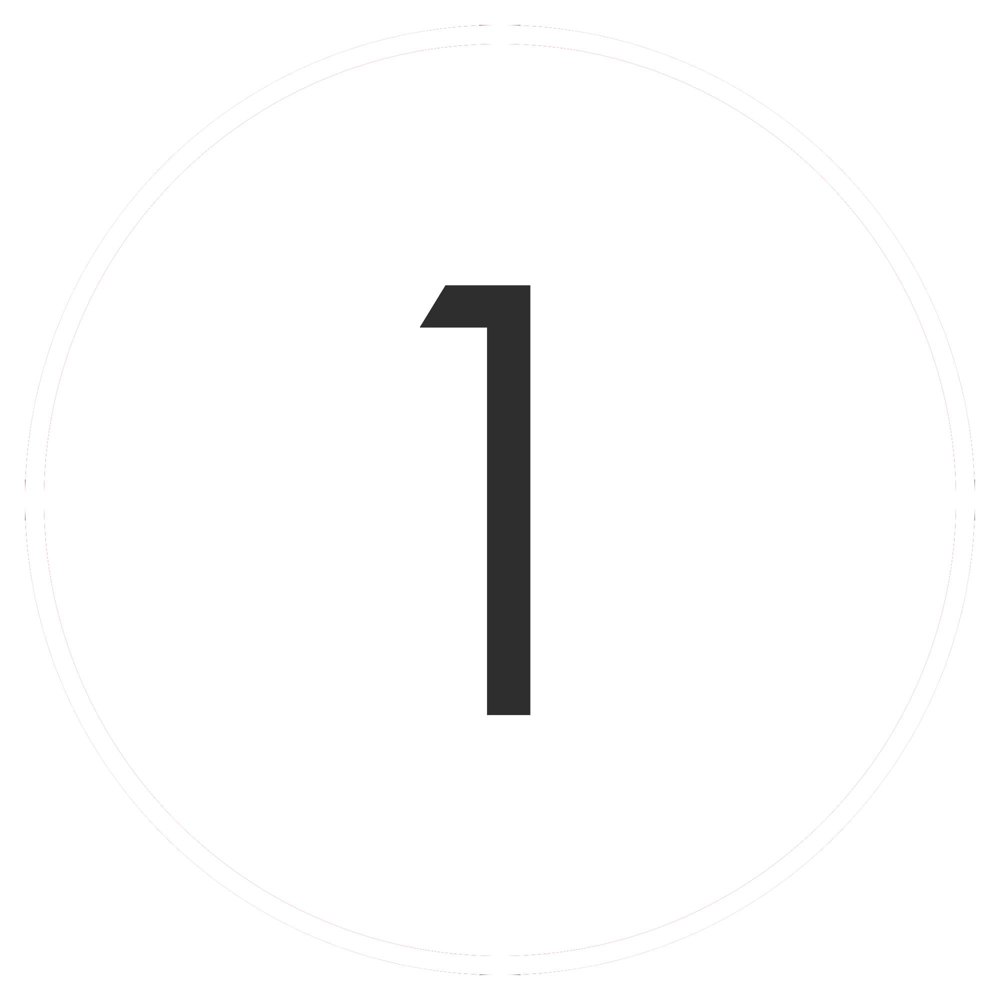Центр обработки данных (ЦОД) - это отказоустойчивая
комплексная централизованная система.
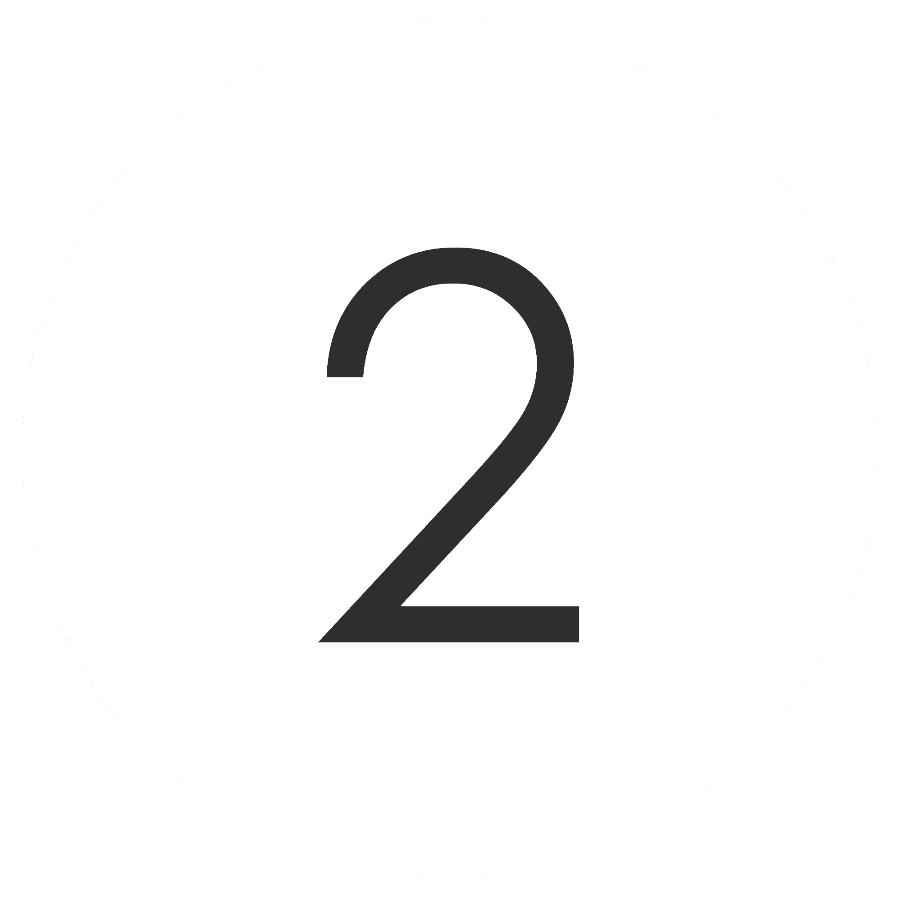Обеспечение автоматизации бизнес-процессов с высоким
уровнем производительности и качеством предоставляемых
сервисов.
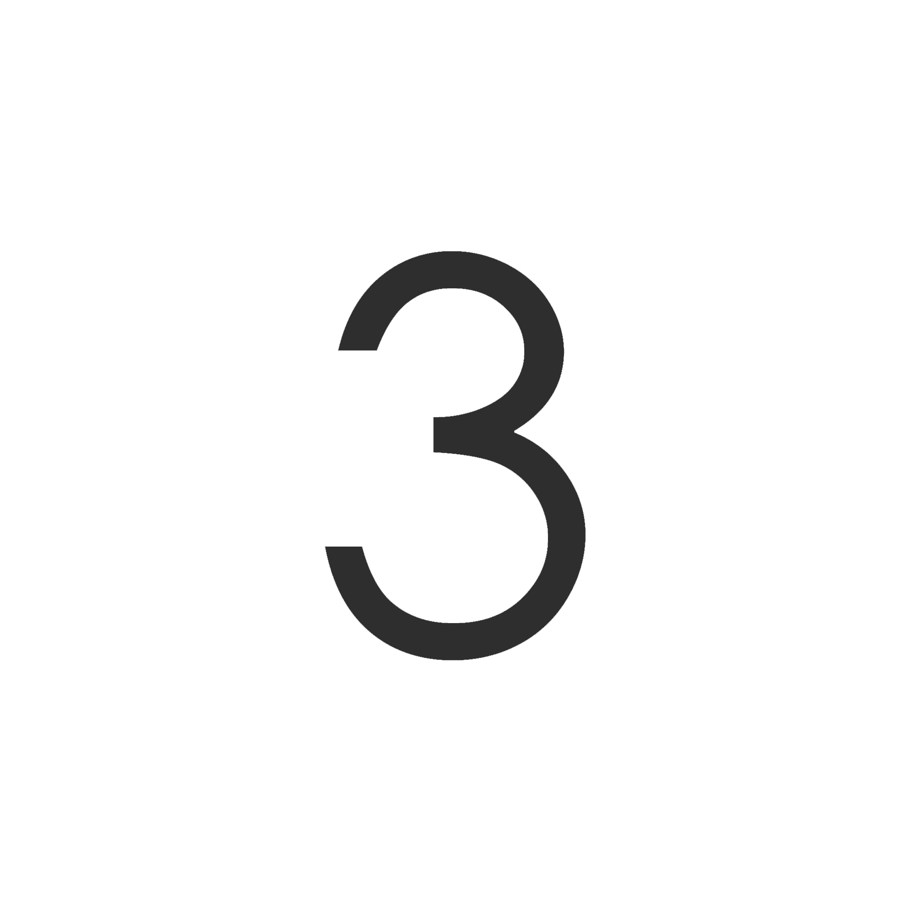Это гарантированная безотказная работа информационной системы предприятия с заданными уровнями доступности,
надежности, безопасности и управляемости.
УCЛУГИ DATA-ЦЕНТРОВ

(Colocation)
Использование заказчиком технических ресурсов дата-центра
(Dedicated server)
Предоставление серверов в аренду
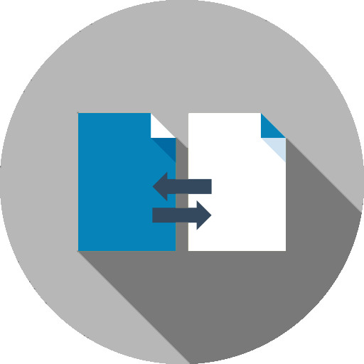
Размещение телекоммуникационной и ИT-инфраструктуры заказчика
(Telehousing)
(Telehousing)
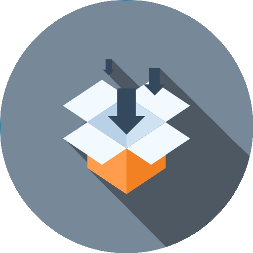
Аренда дискового пространства
(Shared)
(Shared)
(Dedicated area)
Предоставление выделенной зоны
ДОПОЛНИТЕЛЬНЫЕ УCЛУГИ DATA-ЦЕНТРОВ
Получение полного управления всей ИТ-инфраструктуры клиента со стороны поставщика
Централизованное управление с удаленным доступом к ПО
Удаленное пользование стандартных элементов ИТ-инфраструктуры
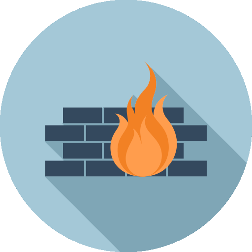
Мониторинг
Поддержание высокого качества сервиса и предупреждение аварийных ситуаций
Поддержание высокого качества сервиса и предупреждение аварийных ситуаций
ИСПОЛЬЗОВАНИЕ УСЛУГ DATA-ЦЕНТРОВ
ОБЪЕМ РЫНКА ЦОД


ОБЪЕМ РЫНКА ЦОД, MUSD
| 1200 |
| 1000 |
| 800 |
| 600 |
| 400 |
| 200 |
| 0 |
| 2011 г. | 2012 г. | 2013 г. | 2014 г. | 2015 г. | 2016 г. |
ТЕНДЕНЦИИ

В данных ЦОД будут размещаться серверы крупных провайдеров услуг колокации и облачных сервисов
DATA-ЦЕНТРЫ РОССИИ
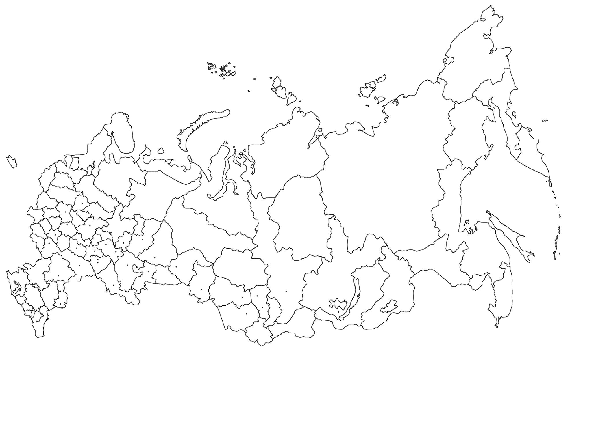
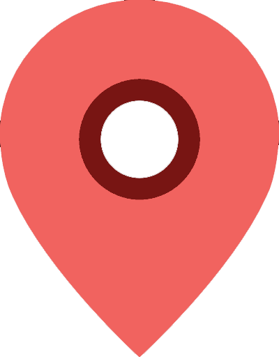
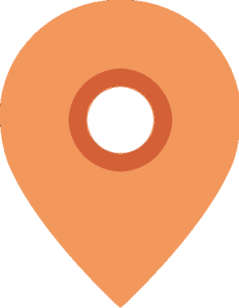
Санкт-Петербург
Москва
КРУПНЕЙШИЕ ПОСТАВЩИКИ УСЛУГ ЦОД 2016
| Название компании | Количество введенных в эксплуатацию стойко-мест | Загруженность мощностей дата-центров (по стойкам) | Города размещения ЦОД | |
| 1. | Ростелеком | 3 900 | 88% | Калиниград, Новосибирск, Казань, Краснодар, Сочи, Ставрополь, Рязань, Москва, Хабаровск, Екатеринбург, Владивосток, Ростов-на-Дону |
| 2. | DataLine | 2 988 | 81% | Москва |
| 3. | DataPro | 3 000 | н/д | Москва |
| 4. | Linxtelecom | 2 040 | н/д | Москва, Санкт-Петербург |
| 5. | Selectel | 1 500 | 80% | Москва, Санкт-Петербург, Ленинградская область |
| 6. | Stack Group | 1 400 | 61% | Москва |
| 7. | Ай-Теко | 1 200 | 80% | Москва |
| 8. | DataSpace | 1 152 | 71% | Москва |
| 9. | SDN | 1 074 | 76% | Санкт-Петербург |
| 10. | Крок | 1 000 | 98% | Москва |
| 11. | Ixcellerate | 735 | 86% | Москва |
| 12. | Caravan | 600 | 98% | Москва |
| 13. | Бизнес Система Телехаус (Oxygen) | 360 | 71% | Москва |
| 14. | Электронная Москва | 350 | н/д | Москва |
| 15. | ИТ-парк | 340 | 56% | Казань, Наб. Челны |
ПРИСВОЕННАЯ КАТЕГОРИЯ НАДЕЖНОСТИ (TIER)
| Параметр/Класс ЦОД(уровень) | Tier 1 | Tier 2 | Tier 3 | Tier 4 |
| Тип здания | С соседями | С соседями | Отдельно стоящее | Отдельно стоящее |
| Количество энерговводов | 1 | 1 | Один активный, второй резервный | Два активных |
| Схема резервирования компонентов | N | N+1 | N+1 | 2(N+1) или S+S |
| Первоначальная мощность из расчета Вт на м2 | 215-323 | 430-537 | 430-645 | 537-860 |
| Максимальная мощность Вт на м2 | 215-323 | 430-537 | 1075-1615 | 1615+ |
| Бесперебойное кондиционирование | Нет | Нет | Возможно | Есть |
| Нормативная нагрузка на фальшпол, кг на м2 | 415 | 488 | 732 | 732+ (по стандарту 2005 г. - 1000+) |
| Общая длительность отказов в год, часов | 28,8 | 22 | 1,6 | 0,4 |
| Доступность ЦОД | 99,671% | 99,749% | 99,982% | 99,995% |
| Обслуживание | ЦОД должен полностью останавливаться для регламных работ | Допускаются перерывы в работе на техническое обслуживание и ремонт | Круглосуточная смена по будням, выходные по вызову | Круглосуточная дежурная смена |

Tier 3+
Unixdatacenter
Tier 3
Selectel
ТрастИнфо
Linxdatacenter
DataLine
SAFEDATA
Stack Telecom
Электронная Москва
Tier 2
Selectel
ТрастИнфо
Linxdatacenter
Tier 3
Facility
DataSpace
Крок
Tier 3
Design
DataSpace
Крок
ДАТАПРО
Tier 3
Optional
Sustainability
DataSpace
ТОП-15 РОССИЙСКИХ ЦОД
ПО КОЛ-ВУ ВВЕДЕННЫХ В ЭКСПЛУАТАЦИЮ СТОЙКО-МЕСТ
РЕЙТИНГ 2016
РОСТЕЛЕКОМ
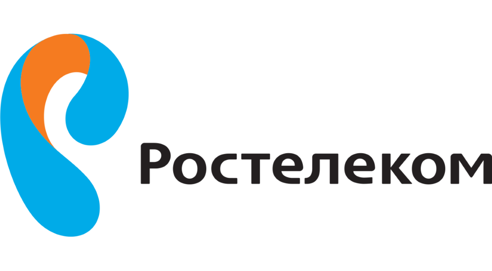
Адрес: Российская Федерация,
г. Москва, Никитский пер., д.7, стр. 1
Сайт ЦОД: rtk-dc.ru
Главный сайт: moscow.rt.ru
г. Москва, Никитский пер., д.7, стр. 1
Сайт ЦОД: rtk-dc.ru
Главный сайт: moscow.rt.ru
УСЛУГИ
| IP-ТРАНЗИТ | IX | DNS | |||
| ДИРЕКТ-КОННЕКТ | CDN | VPN | |||
| МЕДИАЛОГИСТИКА | БЛОЧНОЕ ХРАНИЛИЩЕ | ОБЪЕКТНОЕ ХРАНИЛИЩЕ | |||
| ФАЙЛОВОЕ ХРАНИЛИЩЕ | РЕЗЕРВНОЕ КОПИРОВАНИЕ | DRAAS | |||
| ПРИВАТНОЕ ОБЛАКО | ПУБЛИЧНОЕ ОБЛАКО | ГИБРИДНОЕ ОБЛАКО | |||
| АРЕНДА ОБОРУДОВАНИЯ | РАЗМЕЩЕНИЕ ОБОРУДОВАНИЯ |
ДОПУСЛУГИ
| WAF | УПРАВЛЕНИЕ И ЭКСПЛУАТАЦИОННОЕ ОБСЛУЖИВАНИЕ | ||
| IPS/IDS | ПРОЕКТИРОВАНИЕ И КОНСАЛТИНГ | ||
| FIREWALL | ТЕХНИЧЕСКОЕ СОПРОВОЖДЕНИЕ СТРОИТЕЛЬСТВА | ||
| ЗАЩИТА ОТ DDOS-АТАК | СЕТЕВОЕ И СИСТЕМНОЕ АДМИНИСТРИРОВАНИЕ | ||
| FIREWALL |
УСЛУГА МОНИТОРИНГА
| 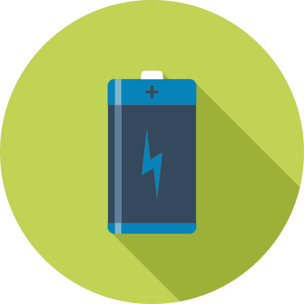 | ||
| Широкий набор инструментов мониторинга и интеллектуальной фильтрации входящего трафика в месте подключения корпоративной сети к Интернету | Настраиваемое средство мониторинга виртуальной инфраструктуры с оповещением по SMS и электронной почте о внештатных ситуациях | Круглосуточный мониторинг параметров температуры и влажности в Дата-центре, параметров бесперебойного электропитания, доступности Ethernet-портов |
ЦЕНЫ НА УСЛУГИ
Цена зависит от конфигурации виртуальной машины и варьируется от 57,26 руб./сут. до 591,70 руб./сут.
СТАТИСТИКА
| Количество стоек, реально размещенных/арендованных клиентами | 3 432 из 3 900 |
| Загруженность мощностей дата-центров (по стойкам) | 88% |
| Совокупная подведенная мощность ко всем ЦОД, мВт | 35 |
| Количество ЦОД на территории РФ | 22 |
| Города размещения ЦОД | Калининград, Новосибирск, Казань, Краснодар, Сочи, Ставрополь, Рязань, Москва, Хабаровск, Екатеринбург, Владивосток, Ростов-на-Дону |
ТЕХНИЧЕСКАЯ ПОДДЕРЖКА
DATALINE
Москва, Боровая ул., дом 7, стр. 10
Сайт: www.dtln.ru
УСЛУГИ
| РАЗМЕЩЕНИЕ ОБОРУДОВАНИЯ | ВИРТУАЛЬНАЯ ИНФРАСТРУКТУРА | ||
| ОБЛАЧНЫЕ СЕРВИСЫ | ТЕЛЕКОМ УСЛУГИ |
ДОПУСЛУГИ
| АДМИНИНСТРИРОВАНИЕ И МОНИТОРИНГ | РЕЗЕРВНОЕ КОПИРОВАНИЕ И ХРАНЕНИЕ | ||
| ЦОД-МАСТЕРСКАЯ |
УСЛУГА МОНИТОРИНГА
| Отслеживаются: Показатели энергопотребления и электроснабжения, климатические параметры, состояние сети, связи и оборудования, программное обеспечение и процессы | Все показатели тщательно отслеживаются с помощью специализированных решений, разработанных специалистами DataLine, и транслируются в Личный кабинет и мобильное приложение DL Monitor | Мониторинг оборудования, ПО и инфраструктуры ЦОДов DataLine позволяет поддерживать высокое качество сервиса и предупреждать аварийные ситуации |
СТАТИСТИКА
| Количество стоек, реально размещенных/арендованных клиентами | 2 988 из 3 703 |
| Загруженность мощностей дата-центров (по стойкам) | 81% |
| Совокупная подведенная мощность ко всем ЦОД, мВт | 30,6 |
| Количество ЦОД на территории РФ | 7 |
| Города размещения ЦОД | Москва |
| Выручка от услуг ЦОД в 2015 г | 3 130 000 |
| Выручка от услуг ЦОД в 2014 г | 2 600 000 |
ТЕХНИЧЕСКАЯ ПОДДЕРЖКА
Наличие детального SLA.
Используются такие способы поддержки, как: телефон и электронная почта (отдельная для каждого типа вопросов)
DATAPRO
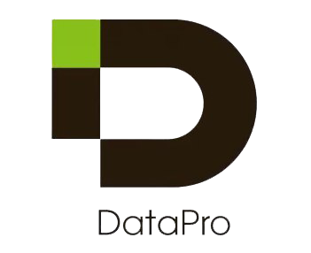
Адрес: Российская Федерация,
г. Москва, ул. Авиамоторная, 69
Сайт: datapro.ru
г. Москва, ул. Авиамоторная, 69
Сайт: datapro.ru
УСЛУГИ
| РАЗМЕЩЕНИЕ ОБОРУДОВАНИЯ | ТЕЛЕКОММУНИКАЦИОННЫЕ УСЛУГИ | ||
| ОБЛАЧНЫЕ СЕРВИСЫ | КАСТОМИЗИРОВАННЫЕ РЕШЕНИЯ |
ДОПУСЛУГИ
| АДМИНИНСТРИРОВАНИЕ | МОНИТОРИНГ | ||
| ПОДКЛЮЧЕНИЕ К СЕТЕВОЙ ИНФРАСТРУКТУРЕ ЦОД | ДОСТУП В ИНТЕРНЕТ |
УСЛУГА МОНИТОРИНГА
| Имеется. Раздел с услугой на сайте находится в стадии наполнения | ||
ЦЕНЫ НА УСЛУГИ
Стоимость предложения 100 000 руб. с учётом НДС в месяц (Предложение действует до 30.04.2017 г.)
СТАТИСТИКА
| Количество введенных в эксплуатацию стойко-мест, все ЦОД | 3 000 |
| Совокупная площадь серверных залов, кв. м | 16 000 |
| Совокупная подведенная мощность ко всем ЦОД, мВт | 20 |
| Количество ЦОД на территории РФ | 1 |
| Города размещения ЦОД | Москва |
| Выручка от услуг ЦОД в 2015 г. | 124 257 |
| Выручка от услуг ЦОД в 2014 г. | 38 725 |
СОЦИАЛЬНАЯ АКТИВНОСТЬ
ТЕХНИЧЕСКАЯ ПОДДЕРЖКА
SLA с уровнем доступности 99,982%
LINXTELECOM
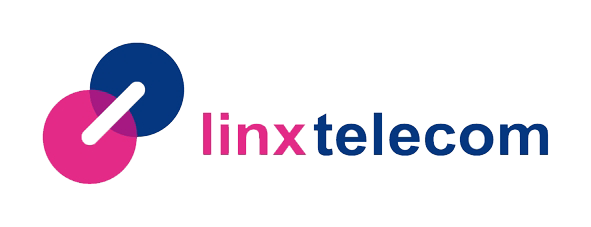
Адрес: Российская Федерация,
г. Москва, Улица 8 Марта, дом 14, строение 1
г. Санкт-Петербург, Улица Репищева, дом 20, литера А
Сайт: rtk-dc.ru
г. Москва, Улица 8 Марта, дом 14, строение 1
г. Санкт-Петербург, Улица Репищева, дом 20, литера А
Сайт: rtk-dc.ru
УСЛУГИ
| ETHERLINX CARRIER GRADE | ETHERLINX 2.0 | MPLS VPN | |||
| LAMBDA | IPL | IP TRANSIT | |||
| VIRTUAL POP | INTERNET VPN | РАЗМЕЩЕНИЕ ОБОРУДОВАНИЯ | |||
| ВЫДЕЛЕННЫЙ СЕРВЕР | УПРАВЛЯЕМЫЙ ХОСТИНГ | КРОСС-СОЕДИНЕНИЕ | |||
| ВЫДЕЛЕННЫЙ ДОСТУП | ЦЕНТР ДЛЯ НЕПРЕРЫВНОСТИ БИЗНЕСА | IAAS | |||
| УДАЛЕННОЕ ХРАНЕНИЕ ДАННЫХ | ВИРТУАЛЬНЫЙ ЦОД | DRAAS | |||
| BAAS | |||||
ДОПУСЛУГИ
| ЦЕНТР АВАРИЙНОГО ВОССТАНОВЛЕНИЯ | ПРОЕКТИРОВАНИЕ | ||
| МОНТАЖ | ПОДДЕРЖКА | ||
| УДАЛЕННОЕ НАБЛЮДЕНИЕ И ОБСЛУЖИВАНИЕ | РЕЗЕРВНОЕ КОПИРОВАНИЕ ДАННЫХ | ||
| LAAS | ИНДИВИДУАЛЬНО РАЗРАБОТАННЫЕ РЕШЕНИЯ |
УСЛУГА МОНИТОРИНГА
| Удаленное наблюдение и обслуживание – этот сервис помогает клиентам более эффективно решать проблемы с их оборудованием | В любое время суток технические специалисты будут вашими надежными «руками» и «глазами» | В режиме 24/7/365, готовыми устранить любые неполадки на вашем оборудовании и сэкономить вам время и деньги |
СТАТИСТИКА
| Количество введенных в эксплуатацию стойко-мест, все ЦОД | 2 040 |
| Совокупная площадь серверных залов, кв. м | 2 186 |
| Совокупная подведенная мощность ко всем ЦОД, мВт | 17 |
| Количество ЦОД на территории РФ | 2 |
| Города размещения ЦОД | Москва, Санкт-Петербург |
| Выручка от услуг ЦОД в 2015 г. | 752 000 |
| Выручка от услуг ЦОД в 2014 г. | 631 000 |
ТЕХНИЧЕСКАЯ ПОДДЕРЖКА
SELECTEL
г. Москва, улица Берзарина, д. 36, стр. 3
г. Санкт-Петербург, улица Цветочная, д. 21, лит. А
Cайт: selectel.ru
УСЛУГИ
| ВИРТУАЛЬНОЕ ПРИВАТНОЕ ОБЛАКО | ОБЛАЧНОЕ ХРАНИЛИЩЕ | СЕТЬ ДОСТАВКИ | |||
| DNS-ХОСТИНГ | МОНИТОРИНГ | ДОСТУПНЫЕ КОНФИГУРАЦИИ | |||
| КОНФИГУРАТОР | РАСПРОДАЖА ВЫДЕЛЕННЫХ СЕРВЕРОВ | РАЗМЕЩЕНИЕ СЕРВЕРА | |||
| АРЕНДА СЕРВЕРНОЙ СТОЙКИ | АРЕНДА ВЫДЕЛЕННОГО ПРОСТРАНСТВА | ||||
| BAAS | |||||
ДОПУСЛУГИ
| ВОЛОКОННО-ОПТИЧЕСКИЕ ЛИНИИ СВЯЗИ | АДМИНИНСТРИРОВАНИЕ СЕРВЕРА | ||
| ЗАЩИТА ОТ DDOS-АТАК | РЕЗЕРВИРОВАНИЕ МАРШРУТИЗАТОРА | ||
| АРЕНДА ПРОГРАММНОГО ОБЕСПЕЧЕНИЯ | ЛОКАЛЬНАЯ СЕТЬ |
УСЛУГА МОНИТОРИНГА
| Легкое управление Интуитивно понятный интерфейс для управления сервисом. Возможность визуального представления статистики |
Многообразие проверок Проверка PING, состояния TCP- и UDP-портов, почтовых сервисов, баз данных и других служб |
Мгновенное информирование Рассылка оповещений по электронной почте, по протоколу XMPP, приватными сообщениями в Twitter или SMS-сообщений на мобильный телефон |
ЦЕНЫ НА УСЛУГИ
3 000
Облачное хранилище
От 4,5
Виртуальное приватное облако
От 1 061
Размещение сервера
2 200 - 5 500
Администрирование серверов
Бесплатно и до 4 500
Конфигуратор
От 6 500
Аренда серверной стойки
20 000 - 25 000
Аренда программного обеспечения
300 - 39 000
Доступные конфигурации
От 2 000 (по акции)
Волоконно-оптические линии связи
7 000 - 80 000
СТАТИСТИКА
| Количество стоек, реально размещенных/арендованных клиентами | 1 200 из 1 500 |
| Загруженность мощностей дата-центров (по стойкам) | 80% |
| Совокупная площадь серверных залов, кв. м | 6 700 |
| Совокупная подведенная мощность ко всем ЦОД, мВт | 12,1 |
| Количество ЦОД на территории РФ | 6 |
| Города размещения ЦОД | Москва, Санкт-Петербург, Ленинградская обл |
| Выручка от услуг ЦОД в 2015 г. | 550 470 |
| Выручка от услуг ЦОД в 2014 г. | 373 695 |
ТЕХНИЧЕСКАЯ ПОДДЕРЖКА
STACK GROUP
г. Москва, ул. Большая Академическая, д. 5а
г. Москва, Варшавское шоссе, д. 125, стр. 1
Cайт: stacktelecom.ru
УСЛУГИ
ДОПУСЛУГИ
| АРЕНДА И РАЗМЕЩЕНИЕ СТОЕК | РАЗМЕЩЕНИЕ СЕРВЕРА COLOCATION | РАЗОВЫЕ ОПЕРАЦИИ С ОБОРУДОВАНИЕМ | ПЕРИОДИЧЕСКИЕ ОПЕРАЦИИ С ОБОРУДОВАНИЕМ | ПРЕДОСТАВЛЕНИЕ ВСПОМОГАТЕЛЬНЫХ МАТЕРИАЛОВ | |||||
| АРЕНДА ВЫДЕЛЕННОГО СЕРВЕРА | ТЕЛЕКОММУНИКАЦИОННЫЕ УСЛУГИ | ОРГАНИЗАЦИЯ ОПТИЧЕСКИХ И МЕДНЫХ КРОССИРОВОК | РАССЫЛКА УВЕДОМЛЕНИЙ | ОРГАНИЗАЦИЯ ПРОПУСКОВ | |||||
| ВИРТУАЛЬНЫЙ ДАТА-ЦЕНТР M1CLOUD | МОНИТОРИНГ | КВМ ДОСТУП К ОБОРУДОВАНИЮ | ВЫДЕЛЕНИЕ СЕЙФОВЫХ ЯЧЕЕК |
УСЛУГА МОНИТОРИНГА
| Специалисты технической поддержки обеспечивают круглосуточный мониторинг климатических условий и энергоснабжения дата-центров | Проведение технической поддержки оборудования клиентов, а также оказывание дополнительных услуг | В пунктах мониторинга ведется круглосуточное наблюдение за клиентским оборудованием и системами жизнеобеспечения дата-центров |
ЦЕНЫ НА УСЛУГИ
СТАТИСТИКА
| Количество стоек, реально размещенных/арендованных клиентами | 854 из 1 400 |
| Загруженность мощностей дата-центров (по стойкам) | 61% |
| Совокупная площадь серверных залов, кв. м | 2 800 |
| Совокупная подведенная мощность ко всем ЦОД, мВт | 8,7 |
| Количество ЦОД на территории РФ | 2 |
| Города размещения ЦОД | Москва |
| Выручка от услуг ЦОД в 2015 г. | 1 240 000 |
| Выручка от услуг ЦОД в 2014 г. | 1 005 000 |
СОЦИАЛЬНАЯ АКТИВНОСТЬ
ТЕХНИЧЕСКАЯ ПОДДЕРЖКА
-Дежурные операторы Центра Поддержки Клиентов (ЦПК)
-Диспетчер
-Специалисты подразделений компании
Используются такие способы поддержки, как: телефон, электронная почта и форма на сайте.
АЙ-ТЕКО
г. Москва, Варшавское шоссе, 125, стр. 16
Cайт: i-teco.ru
УСЛУГИ
ДОПУСЛУГИ
| АРЕНДА СТОЕК | ФИЗИЧЕСКАЯ ЗАЩИТА СТОЕК | ПРОКТИРОВАНИЕ IT-ИНФРАСТРУКТУРЫ | РЕЗЕРВИРОВАНИЕ ДАННЫХ | СЕРВИСНОЕ ОБСЛУЖИВАНИЕ SMARTHANDS | |||||
| АРЕНДА ВЫЧИСЛИТЕЛЬНЫХ РЕСУРСОВ | ХРАНЕНИЕ МАГНИТНЫХ НОСИТЕЛЕЙ | ЗАЩИТА ОТ DDOS-АТАК | РЕКОНСТРУКЦИЯ И РАЗРАБОТКА ПОДСИСТЕМ ЦОД | ТЕЛЕКОММУНИКАЦИОННАЯ ИНФРАСТРУКТУРА ЦОД | |||||
| АРЕНДА СЕТЕВЫХ РЕСУРСОВ | КОМЛЕКСНАЯ ВИРТУАЛИЗАЦИЯ ЦОД | ИНЖЕНЕРНАЯ ИНФРАСТРУКТУРА ЦОД | МОНИТОРИНГ И УПРАВЛЕНИЕ ЦОД | АРЕНДА ЛИЦЕНЗИЙ | |||||
| АРЕНДА ПОМЕЩЕНИЯ DATA-ROOM | АРЕНДА ПРОСТРАНСТВА ХРАНЕНИЯ ДАННЫХ | DBAAS | DCAAS | ||||||
| ОБЛАЧНЫЕ РЕШЕНИЯ | СОЗДАНИЕ КЛИЕНТСКИХ ЦОД ПОД КЛЮЧ | ||||||||
| DCIM |
УСЛУГА МОНИТОРИНГА
| Система управления и мониторинга ЦОД необходима для контроля состояния элементов центра обработки данных и оперативного управления оборудованием и сервисами | Встроенные механизмы самообслуживания облегчают работу и позволяют пользователям самим создавать необходимые им сервисы с необходимыми параметрами | А встроенные средства мониторинга гарантируют мгновенное обнаружение проблем и своевременное их устранение |
СТАТИСТИКА
| Количество стоек, реально размещенных/арендованных клиентами | 960 из 1 200 |
| Загруженность мощностей дата-центров (по стойкам) | 80% |
| Совокупная площадь серверных залов, кв. м | 4 500 |
| Совокупная подведенная мощность ко всем ЦОД, мВт | 8 |
| Количество ЦОД на территории РФ | 1 |
| Города размещения ЦОД | Москва |
| Выручка от услуг ЦОД в 2015 г. | 662 636 |
| Выручка от услуг ЦОД в 2014 г. | 652 844 |
ТЕХНИЧЕСКАЯ ПОДДЕРЖКА
Используются такие способы поддержки, как: телефон, электронная почта и форма на сайте.
Контроль SLA
DATASPACE
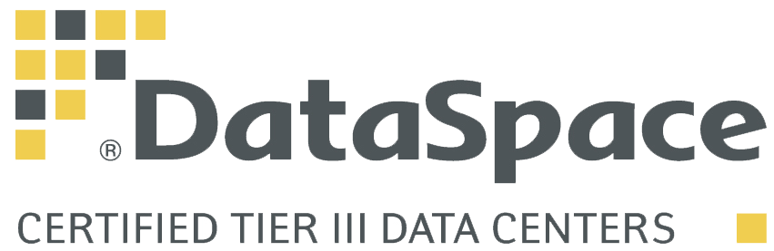
Адрес: Российская Федерация,
г. Москва, ул. Шарикоподшипниковская, д. 11, стр. 9
Cайт: dataspace.ru
г. Москва, ул. Шарикоподшипниковская, д. 11, стр. 9
Cайт: dataspace.ru
УСЛУГИ
| COLOCATION-РАЗМЕЩЕНИЕ ОБОРУДОВАНИЯ | ИНДИВИДУАЛЬНЫЕ ПРОЕКТНЫЕ РЕШЕНИЯ | РАСШИРЕННАЯ ТЕХНИЧЕСКАЯ ПОДДЕРЖКА | |||
| УПРАВЛЕНИЕ ЖИЗНЕННЫЕ ЦИКЛОМ ЦОД | УПРАВЛЕНИЕ ПРОЕКТАМИ МИГРАЦИИ ЦОД | ТЕЛЕКОММУНИКАЦИОННЫЕ РЕШЕНИЯ |
УСЛУГА МОНИТОРИНГА
| Проведение комплексного технического анализа инженерной инфраструктуры и организации эксплуатации ЦОД | Определение соответствия инженерной инфраструктуры вашего ЦОД целевым эксплуатационным показателям объекта | Выявление проблем в эксплуатации, рисков потери управления и аварийных выключений |
СТАТИСТИКА
| Количество стоек, реально размещенных/арендованных клиентами | 820 из 1 152 |
| Загруженность мощностей дата-центров (по стойкам) | 71% |
| Совокупная площадь серверных залов, кв. м | 3 000 |
| Совокупная подведенная мощность ко всем ЦОД, мВт | 9,5 |
| Количество ЦОД на территории РФ | 1 |
| Города размещения ЦОД | Москва |
| Выручка от услуг ЦОД в 2015 г. | 268 751 |
| Выручка от услуг ЦОД в 2014 г. | 175 041 |
ТЕХНИЧЕСКАЯ ПОДДЕРЖКА
Специалисты службы клиентской поддержки DataSpace обеспечивают удаленное управление и обслуживание IT-оборудования клиентов в режиме 24*7*365.
Используются такие способы поддержки, как: телефон, электронная почта и форма на сайте.
Контроль SLA
SDN (XELENT)
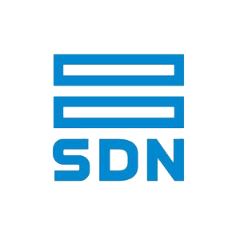
Адрес: Российская Федерация,
г. Санкт-Петербург, Выборгское шоссе, д. 503, корп. 12
Cайт: www.xelent.ru
www.stack.net
г. Санкт-Петербург, Выборгское шоссе, д. 503, корп. 12
Cайт: www.xelent.ru
www.stack.net
УСЛУГИ
| РАЗМЕЩЕНИЕ И АРЕНДА СЕРВЕРОВ | ОРГАНИЗАЦИЯ СВЯЗИ | ОБЛАЧНОЕ ХРАНИЛИЩЕ | |||
| УДАЛЕННЫЕ РАБОЧИЕ МЕСТА | ВИРТУАЛЬНЫЙ СЕРВЕР | ВИРТУАЛЬНЫЙ ДАТА ЦЕНТР | |||
| ТЕХНИЧЕСКАЯ ПОДДЕРЖКА | ПРОГРАММНЫЕ ПРОДУКТЫ | НЕПРЕРЫВНОСТЬ БИЗНЕСА |
УСЛУГА МОНИТОРИНГА
ЦЕНЫ НА УСЛУГИ
| Colocation | Удаленные рабочие места | ||||
| Услуга | Стоимость | Услуга | Стоимость | ||
| Стойка-S | 22 900 р./мес | Стандарт | 9 700 р./мес | ||
| Стойка-M | 33 900 р./мес | Производительный | 14 700 р./мес | ||
| Стойка-XL | 125 990 р./мес | Пользовательский | По запросу | ||
| Виртуальный сервер | Облачное хранилище | ||||
| Услуга | Стоимость | от 2 990 р/мес до 200 000 р/мес. | |||
| Тариф-S | 318 р./мес | ||||
| Тариф-M | 1 465 р./мес | ||||
| Тариф-XL | 3 145 р./мес | ||||
СТАТИСТИКА
| Количество стоек, реально размещенных/арендованных клиентами | 815 из 1 074 |
| Загруженность мощностей дата-центров (по стойкам) | 76% |
| Совокупная площадь серверных залов, кв. м | 6 500 |
| Совокупная подведенная мощность ко всем ЦОД, мВт | 14 |
| Количество ЦОД на территории РФ | 1 |
| Города размещения ЦОД | Санкт-Петербург |
| Выручка от услуг ЦОД в 2015 г. | 52 274 |
| Выручка от услуг ЦОД в 2014 г. | 17 529 |
ТЕХНИЧЕСКАЯ ПОДДЕРЖКА
Решение любых вопросов в режиме 24/7.Используются такие способы поддержки, как: телефон, электронная почта (отдельная для каждого типа вопросов) и форма обратной связи на сайте.
Стандартный SLA 99,9% в договоре может быть увеличен и задокументирован.
КРОК
г. Москва, ул. Волочаевская, д. 5, корп. 1
Cайт: croc.ru
УСЛУГИ
| КОНСАЛТИНГ | УПРАВЛЯЕМЫЕ УСЛУГИ | ФИНАНСИРОВАНИЕ ИТ-ПРОЕКТОВ | |||
| УСЛУГИ СЕТИ ЦОД | РАЗРАБОТКА ПО | ИМПОРТОЗАМЕЩЕНИЕ | |||
| ОБЛАЧНЫЕ ВЫЧИСЛЕНИЯ | КОМПЛЕКСНЫЙ СЕРВИС И ИТ-АУТСОРСИНГ | ЭКСПРЕСС-УСЛУГИ | |||
| ИТ-ПЕРЕВОДЫ | ИТ-КУРСЫ |
УСЛУГА МОНИТОРИНГА
| Анализ данных о работе приложений; Гибкая настройка триггеров и оповещений; Диагностика производительности на каждом шаге транзакции; |
Анализ состояния сетей и доступности телеком-оборудования;
Интеграция с корпоративными системами мониторинга; |
Детализация отчетов с учетом ролей пользователя;
Автоматические рекомендации по устранению задержек в транзакциях; Диагностика снижения производительности; |
СТАТИСТИКА
| Количество стоек, реально размещенных/арендованных клиентами | 980 из 1 000 |
| Загруженность мощностей дата-центров (по стойкам) | 98% |
| Совокупная площадь серверных залов, кв. м | 3 000 |
| Совокупная подведенная мощность ко всем ЦОД, мВт | 11 |
| Количество ЦОД на территории РФ | 3 |
| Города размещения ЦОД | Москва |
| Выручка от услуг ЦОД в 2015 г. | 1 741 769 |
| Выручка от услуг ЦОД в 2014 г. | 1 305 000 |
ТЕХНИЧЕСКАЯ ПОДДЕРЖКА
Действует круглосуточно, принимает обращения по телефону и электронной почте, на русском и английском языках. Сертифицированные технические специалисты работают 7 дней в неделю, включая выходные и праздники.
SLA обеспечивает гибкий механизм управления стоимостью услуги
IXCELLERATE
г. Москва, Алтуфьевское шоссе, дом 33Г
Cайт: ixcellerate.com
УСЛУГИ
ДОПУСЛУГИ
| РАЗМЕЩЕНИЕ СЕРВЕРНОГО ОБОРУДОВАНИЯ | ТЕХПОДДЕРЖКА ПРИ УСТАНОВКЕ | ПРИЕМ ДОСТАВЛЕННОГО ОБОРУДОВАНИЯ | АРЕНДА ОФИСНЫХ ПОМЕЩЕНИЙ | ПОЛУЧЕНИЕ И ХРАНЕНИЕ ГРУЗОВ В ЗАЩИЩЕННЫХ ПОМЕЩЕНИЯХ | |||||
| ВОЗМОЖНЫЕ СВЯЗИ | УДАЛЕННАЯ ТЕХПОДДЕРЖКА | БЕЗОПАСНОЕ ХРАНЕНИЕ ОБОРУДОВАНИЯ | ОСНАЩЕНИЕ И РАСШИРЕННОЕ ОБСЛУЖИВАНИЕ | ИНФРАСТРУКТУРА КАК УСЛУГА | |||||
| РЕШЕНИЯ ДЛЯ ПРЕДПРИЯТИЙ | КРОССИРОВКА | ДОСТУП К СТАТИСТИКЕ И ОТЧЕТАМ | ПРОКЕТИРОВАНИЕ И СТРОИТЕЛЬСТВО | УСАНОВКА И ПРОКЛАДКА КАБЕЛЕЙ | |||||
| ПОМОЩЬ В ПЕРЕНОСЕ ИТ-ИНФРАСТРУКТУРЫ | КОНФЕРЕНЦ-ЗАЛЫ |
УСЛУГА МОНИТОРИНГА
| Управление кабельной системой;Полный учет и контроль кабелей;Показатели окружающей среды; | Система управления зданием;Используется комплексная система мониторинга и управления BMS Computrols. Под контролем находятся непрерывно более 200 параметров оборудования | Постоянный мониторинг всех технических помещений;Инженерные системы;Мониторинг всех систем 24 x 7 |
СТАТИСТИКА
| Количество стоек, реально размещенных/арендованных клиентами | 635 из 735 |
| Загруженность мощностей дата-центров (по стойкам) | 86% |
| Совокупная площадь серверных залов, кв. м | 6 000 |
| Совокупная подведенная мощность ко всем ЦОД, мВт | 13,7 |
| Количество ЦОД на территории РФ | 1 |
| Города размещения ЦОД | Москва |
| Выручка от услуг ЦОД в 2015 г. | 175 239 |
| Выручка от услуг ЦОД в 2014 г. | 55 989 |
ТЕХНИЧЕСКАЯ ПОДДЕРЖКА
Клиенты получают финансовую компенсацию, если время простоя превышает 5 минут и 16 секунд в год(SLA).
Служба работает круглосуточно, принимает обращения по телефону и электронной почте, возможен обратный звонок и вход в личный кабинет на портале компании. Доступны русский, английский, французский и японский языки
CARAVAN
г. Москва, Варшавское шоссе дом 1, стр. 6
Cайт: caravan.ru
УСЛУГИ
ДОПУСЛУГИ
| ВИРТУАЛЬНЫЙ ДАТА-ЦЕНТР | ВИРТУАЛЬНЫЙ ХОСТИНГ | ВИРТУАЛЬНЫЙ ВЫДЕЛЕННЫЙ СЕРВЕР | ВЫДЕЛЕНИЕ ДИСКОВОГО ПРОСТРАНСТВА | СИСТЕМА РЕЗЕРВНОГО КОПИРОВАНИЯ | |||||
| ОБЛАЧНАЯ ИНФРАСТРУКТУРА | ЗАЩИТА ПРИЛОЖЕНИЙ И ИНФОРМАЦИИ | ОРГАНИЗАЦИЯ СЕТЕЙ И ПЕРЕДАЧИ ДАННЫХ | НАСТРОЙКА БЕЗ ДАННЫХ | НАСТРОЙКА ПОЧТОВЫХ СИСТЕМ | |||||
| ОБЛАЧНЫЙ БЭКАП | РЕГИСТРАЦИЯ ДОМЕНОВ | ПРЕДУСТАНОВЛЕННЫЕ МОДУЛИ |
УСЛУГА МОНИТОРИНГА
| Все действия связанные с управлением услугой, изменением ее параметров | Мониторинг производительности и другие настройки осуществляются через специальный веб-интерфейс | Комплексный мониторинг всех систем осуществляется 24х7х365 |
ЦЕНЫ НА УСЛУГИ
ОС Windows от 1 169,28 ₽ до 51 811,2 ₽ в месяц
СТАТИСТИКА
| Количество стоек, реально размещенных/арендованных клиентами | 589 из 600 |
| Загруженность мощностей дата-центров (по стойкам) | 98% |
| Совокупная площадь серверных залов, кв. м | 1 000+ |
| Совокупная подведенная мощность ко всем ЦОД, мВт | 4 |
| Количество ЦОД на территории РФ | 1 |
| Города размещения ЦОД | Москва |
| Выручка от услуг ЦОД в 2015 г. | 132 653 |
| Выручка от услуг ЦОД в 2014 г. | 110 712 |
ТЕХНИЧЕСКАЯ ПОДДЕРЖКА
Соглашение об уровне качества (SLA) с коэффициентом доступности 99,9999%.
БИЗНЕС СИСТЕМА ТЕЛЕХАУС (OXYGEN)
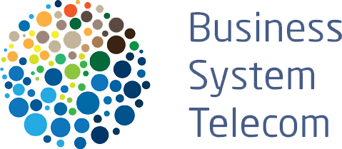
Адрес: Российская Федерация,
г. Москва, Волгоградский проспект, 42, кор. 9
Cайт: bstelecom.ru
г. Москва, Волгоградский проспект, 42, кор. 9
Cайт: bstelecom.ru
УСЛУГИ
ДОПУСЛУГИ
| АРЕНДА ПРОГРАММНОГО ОБЕСПЕЧЕНИЯ | СОЗДАНИЕ КОРПОРАТИВНОЙ VPN СЕТИ | ВИРТУАЛЬНЫЙ ВЫДЕЛЕННЫЙ СЕРВЕР | ИНТЕРНЕТ В ОФИС В МОСКВЕ | УСЛУГА ВИРТУАЛЬНЫЙ ОФИС | |||||
| КОРПОРАТИВНАЯ IP И SIP ТЕЛЕФОНИЯ | АРЕНДА СЕРВЕРНЫХ СТОЕК | ОРГАНИЗАЦИЯ СЕТЕЙ И ПЕРЕДАЧИ ДАННЫХ | ПРЕДОСТАВЛЕНИЕ ВЫДЕЛЕННЫХ КАНАЛОВ СВЯЗИ | РЕЗЕРВИРОВАНИЕ ПО СХЕМЕ N+1 | |||||
| ПРОДАЖА ТЕЛЕКОММУНИКАЦИОННОГО ОБОРУДОВАНИЯ | РАЗМЕЩЕНИЕ ОБОРУДОВАНИЯ: УСЛУГИ COLOCATION | ВИРТУАЛЬНЫЙ ЦОД | ЗАЩИТА ОТ DDOS-АТАК | ||||||
| УСЛУГИ ТЕЛЕФОНИИ |
УСЛУГА МОНИТОРИНГА
| Интегрированная СКАДА Ignition (Java, USA) снимает более сотни параметров с каждой из инженерных систем | Функция Ignition включает межплатформенное развертывание через технологию Java Web Start. | Параллельно функционируют штатные системы мониторинга инженерного оборудования |
СТАТИСТИКА
| Количество стоек, реально размещенных/арендованных клиентами | 258 из 360 |
| Загруженность мощностей дата-центров (по стойкам) | 71% |
| Совокупная площадь серверных залов, кв. м | 3 350 |
| Совокупная подведенная мощность ко всем ЦОД, мВт | 12,8 |
| Количество ЦОД на территории РФ | 1 |
| Города размещения ЦОД | Москва |
| Выручка от услуг ЦОД в 2015 г. | 241 000 |
| Выручка от услуг ЦОД в 2014 г. | 208 000 |
ТЕХНИЧЕСКАЯ ПОДДЕРЖКА
ЭЛЕКТРОННАЯ МОСКВА
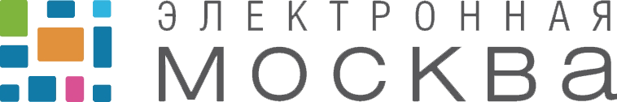
Адрес: Российская Федерация,
г. Москва, Нижний Сусальный переулок, д. 5, стр. 10
Cайт: e-moskva.ru
г. Москва, Нижний Сусальный переулок, д. 5, стр. 10
Cайт: e-moskva.ru
УСЛУГИ
ДОПУСЛУГИ
| РАЗМЕЩЕНИЕ ОБОРУДОВАНИЯ ЦОД | КАТАСТРОФОУСТОЙЧИВЫЕ РЕШЕНИЯ | РЕЗЕРВИРОВАНИЕ СЕРВЕРНЫХ ШКАФОВ | РЕЗЕРВНОЕ КОПИРОВАНИЕ | УСЛУГИ ПО МОНТАЖУ И ПЕРЕВОЗКЕ ОБОРУДОВАНИЯ | |||||
| АРЕНДА И ПЕРСОНАЛИЗАЦИЯ МОДУЛЯ | РАЗМЕЩЕНИЕ ОБОРУДОВАНИЯ В ГЕРМОЗОНЕ | ОРГАНИЗАЦИЯ РАБОЧИХ МЕСТ ДЛЯ ЗАКАЗЧИКА | УСЛУГИ МОНИТОРИНГА И АДМИНИНСТРИРОВАНИЯ | УСЛУГИ СВЯЗИ | |||||
| АРЕНДА ОБОРУДОВАНИЯ И РАЗМЕЩЕНИЕ ЦОД В "НАГОРНАЯ" | РАЗМЕЩЕНИЕ ОБОРУДОВАНИЯ В МАШИННОЙ ЗАЛЕ | КОНСАЛТИНГ ПО ИНФОРМАЦИОННОЙ БЕЗОПАСНОСТИ |
УСЛУГА МОНИТОРИНГА
 |  |  |
| -Дежурная смена 24х7х365; - Мониторинг и диспетчеризация инженерных систем ЦОД; - Техническая поддержка; |
Возможно принять ПАК основных производителей ИТ-оборудования на поддержку с различными параметрами по скорости реакции на инцидент и временем устранения неполадок | - Мониторинг до каждой розетки на блоках питания; - Системы обнаружения протечек; |
СТАТИСТИКА
| Количество введенных в эксплуатацию стойко-мест, все ЦОД | 350 |
| Совокупная площадь серверных залов, кв. м | 2 000 |
| Совокупная подведенная мощность ко всем ЦОД, мВт | 16,5 |
| Количество ЦОД на территории РФ | 2 |
| Города размещения ЦОД | Москва |
ТЕХНИЧЕСКАЯ ПОДДЕРЖКА
Поддержка осуществляется по телефону, электронной почте либо через форму обратной связи на сайте, а также через заказ обратного звонка
ИТ-ПАРК
Республика Татарстан, г.Казань, ул. Петербургская д.52.
Cайт: dc.itpark-kazan.ru
УСЛУГИ
| ВИРТУАЛЬНЫЙ СЕРВЕР VMWARE | АРЕНДА ПОЧТОВОГО СЕРВЕРА EXCHANGE | РАЗМЕЩЕНИЕ СТОЙКИ В ЦОД | |||
| ВИРТУАЛЬНЫЙ СЕРВЕР KVM | РАЗМЕЩЕНИЕ В ЮНИТЕ | АДМИНИНСТРИРОВАНИЕ И ОБСЛУЖИВАНИЕ СЕРВЕРОВ | |||
| ВЕБ ХОСТИНГ |
УСЛУГА МОНИТОРИНГА
ЦЕНЫ НА УСЛУГИ
| Виртуальный сервер KVM | ||||
| Конфигурация 1 | Конфигурация 2 | Конфигурация 3 | Конфигурация 4 | Конфигурация 5 |
| 100 р./мес | 150 р./мес | 300 р./мес | 500 р./мес | 1 000 р./мес |
| Веб хостинг | ||||
| Хост 0 | Хост 1 | Хост 2 | Хост 3 | |
| 50 р./мес | 100 р./мес | 200 р./мес | 300 р./мес | |
| Размещение стойки в ЦОД | Виртуальный сервер VMware | ||
| Абонентская плата, руб/мес с НДС: 2950 до 79500 | Абонентская плата, руб/мес с НДС: от 2148 до 93880 |
| Аренда почтового сервера Exchange |
| Абонентская плата, руб/мес с НДС: 12 500 |
СТАТИСТИКА
| Количество стоек, реально размещенных/арендованных клиентами | 180 из 340 |
| Загруженность мощностей дата-центров (по стойкам) | 56% |
| Совокупная площадь серверных залов, кв. м | 1 200 |
| Совокупная подведенная мощность ко всем ЦОД, мВт | 2,5 |
| Количество ЦОД на территории РФ | 2 |
| Города размещения ЦОД | Казань, Наб. Челны |
СОЦИАЛЬНАЯ АКТИВНОСТЬ
ТЕХНИЧЕСКАЯ ПОДДЕРЖКА
SLA – 99.982%
N+1 резервирование инженерных систем
Служба технической поддержки работает круглосуточно, без выходных.
Поддержка осуществляется по телефону, электронной почте или через сервис-деск для отправки и отслеживания заявок.